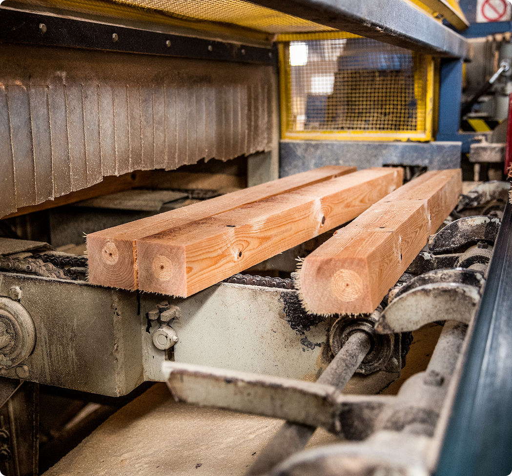
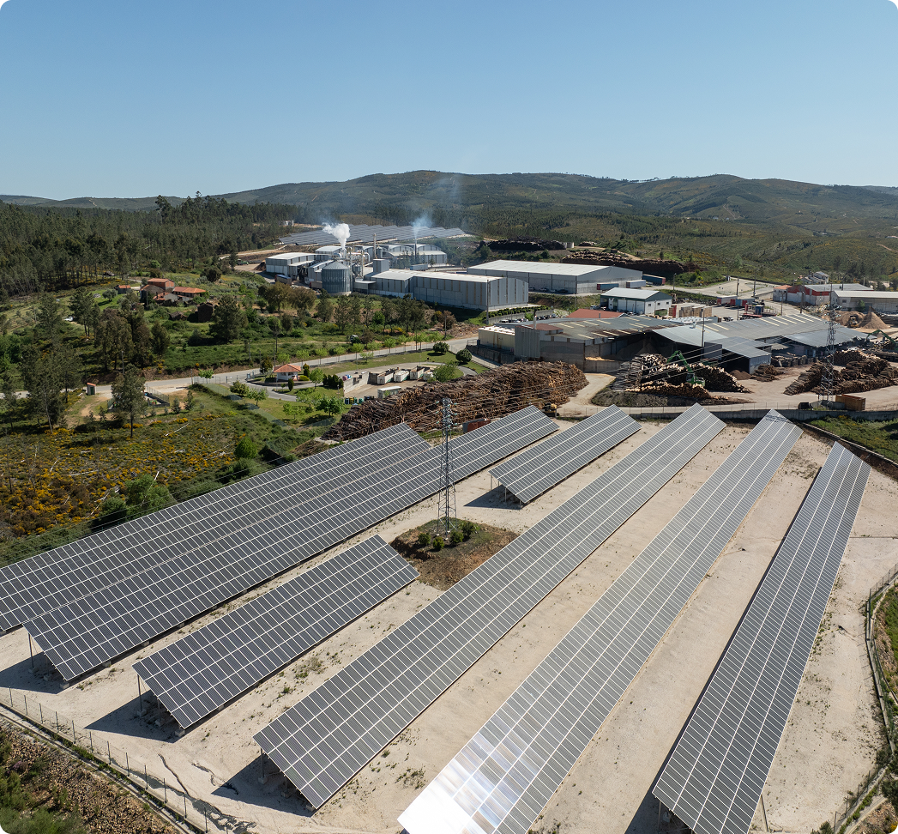
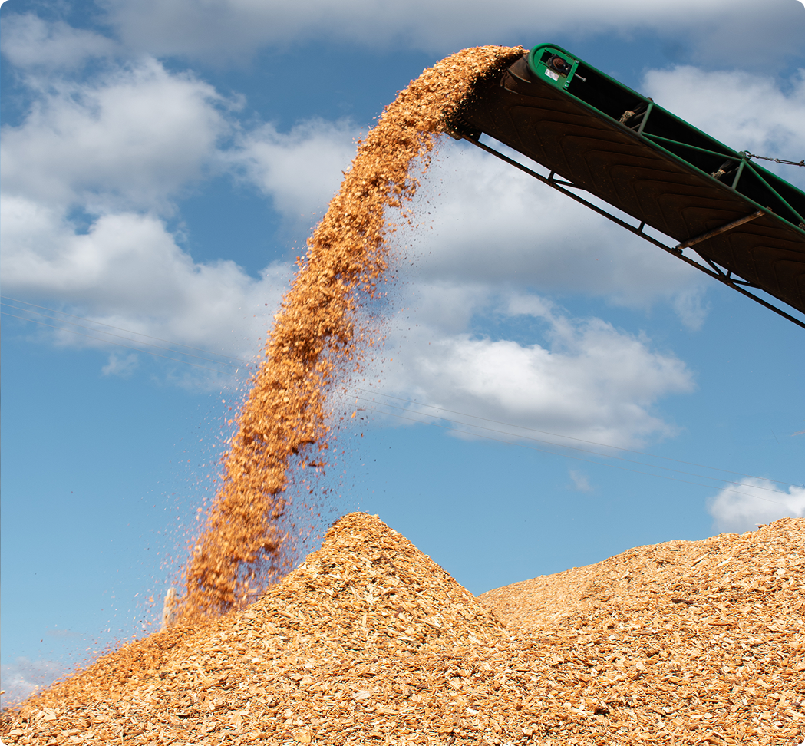

Este projeto tem com objetivo aumentar a capacidade produtiva de pellets, briquetes e madeira serrada, traduzindo-se num crescimento de cerca de 20% do volume de negócios.
O investimento contempla novos equipamentos tecnológicos, ações de marketing e vendas e a construção de um armazém de 4.000 m² para produtos acabados, sobretudo os de queima.
Com esta expansão, a empresa reforça a qualidade dos seus produtos e a capacidade de resposta às exigências dos clientes.

A JAF tem apostado fortemente em inovação e sustentabilidade através de investimentos estratégicos. Entre os projetos mais significativos destaca-se a construção de dois parques de painéis fotovoltaicos, que permitem gerar cerca de 2MWh de energia limpa destinada ao autoconsumo na serração de madeiras e na Nova Lenha.
Esta energia permite suportar parte das operações diárias, reduz a dependência de fontes externas e reforça o compromisso ambiental.
Este investimento reflete a visão de futuro da empresa, que alia crescimento económico à responsabilidade ambiental, garantindo operações mais eficientes e sustentáveis

O projeto consiste na instalação de uma central de cogeração a biomassa florestal, contribuindo para a descarbonização da atividade, e tornando a produção de pellets e briquetes energeticamente mais eficiente. Permite ainda o aumento da resiliência e a redução da dependência da empresa, reforça a economia circular, e aumenta a competitividade e a redução da pegada de carbono, em alinhamento com as políticas climáticas nacionais e europeias. Com este investimento, a empresa aumenta também a sua autonomia estratégica e reduz a exposição a riscos associados às cadeias de valor.
Garantir uma gestão florestal sustentável, inovação nos processos
de transformação da madeira e promover a economia circular em
todas as suas operações.
Procura também fortalecer a sua presença no setor industrial e de transportes, assegurando eficiência e qualidade em cada etapa, ao
mesmo tempo que mantém um compromisso firme com a responsabilidade ambiental e social. O objetivo final é crescer de forma
sustentável, oferecendo produtos de excelência e contribuindo para um futuro mais verde e consciente.